Estimate V – fewer samples
Yuxin Zou
2018-11-24
Last updated: 2020-12-22
Checks: 7 0
Knit directory: mash_application/analysis/
This reproducible R Markdown analysis was created with workflowr (version 1.6.2). The Checks tab describes the reproducibility checks that were applied when the results were created. The Past versions tab lists the development history.
Great! Since the R Markdown file has been committed to the Git repository, you know the exact version of the code that produced these results.
Great job! The global environment was empty. Objects defined in the global environment can affect the analysis in your R Markdown file in unknown ways. For reproduciblity it’s best to always run the code in an empty environment.
The command set.seed(1) was run prior to running the code in the R Markdown file. Setting a seed ensures that any results that rely on randomness, e.g. subsampling or permutations, are reproducible.
Great job! Recording the operating system, R version, and package versions is critical for reproducibility.
Nice! There were no cached chunks for this analysis, so you can be confident that you successfully produced the results during this run.
Great job! Using relative paths to the files within your workflowr project makes it easier to run your code on other machines.
Great! You are using Git for version control. Tracking code development and connecting the code version to the results is critical for reproducibility.
The results in this page were generated with repository version cf80360. See the Past versions tab to see a history of the changes made to the R Markdown and HTML files.
Note that you need to be careful to ensure that all relevant files for the analysis have been committed to Git prior to generating the results (you can use wflow_publish or wflow_git_commit). workflowr only checks the R Markdown file, but you know if there are other scripts or data files that it depends on. Below is the status of the Git repository when the results were generated:
Ignored files:
Ignored: .DS_Store
Ignored: .Rhistory
Ignored: .Rproj.user/
Ignored: analysis/.DS_Store
Ignored: analysis/.Rhistory
Ignored: analysis/include/.DS_Store
Ignored: code/.DS_Store
Ignored: data/.DS_Store
Ignored: output/.DS_Store
Ignored: output/.sos/
Untracked files:
Untracked: analysis/Classify.Rmd
Untracked: analysis/EstimateCorMash.Rmd
Untracked: analysis/EstimateCorMaxMCMash.Rmd
Untracked: analysis/HierarchicalFlashSim.Rmd
Untracked: analysis/MashLowSignalGTEx4.Rmd
Untracked: analysis/OutlierDetection.Rmd
Untracked: analysis/OutlierDetection2.Rmd
Untracked: analysis/OutlierDetection3.Rmd
Untracked: analysis/OutlierDetection4.Rmd
Untracked: analysis/mash_missing_row.Rmd
Untracked: code/GTExNullModel.R
Untracked: code/MashClassify.R
Untracked: code/MashCorResult.R
Untracked: code/MashCormVResult.R
Untracked: code/MashNULLCorResult.R
Untracked: code/MashSource.R
Untracked: code/Weight_plot.R
Untracked: code/addemV.R
Untracked: code/dsc-differentV/
Untracked: code/dsc-differentV_signal/
Untracked: code/estimate_cor.R
Untracked: code/generateDataV.R
Untracked: code/johnprocess.R
Untracked: code/mV.R
Untracked: code/sim_mean_sig.R
Untracked: code/summary.R
Untracked: data/Blischak_et_al_2015/
Untracked: data/scale_data.rds
Untracked: data/wasp_yuxin/
Untracked: output/AddEMV/
Untracked: output/CovED_UKBio_strong.rds
Untracked: output/CovED_UKBio_strong_Z.rds
Untracked: output/EstCorMLECompare/
Untracked: output/Flash_UKBio_strong.rds
Untracked: output/GTExNULLres/
Untracked: output/GTEx_2.5_nullData.rds
Untracked: output/GTEx_2.5_nullModel.rds
Untracked: output/GTEx_2.5_nullPermData.rds
Untracked: output/GTEx_2.5_nullPermModel.rds
Untracked: output/GTEx_3.5_nullData.rds
Untracked: output/GTEx_3.5_nullModel.rds
Untracked: output/GTEx_3.5_nullPermData.rds
Untracked: output/GTEx_3.5_nullPermModel.rds
Untracked: output/GTEx_3_nullData.rds
Untracked: output/GTEx_3_nullModel.rds
Untracked: output/GTEx_3_nullPermData.rds
Untracked: output/GTEx_3_nullPermModel.rds
Untracked: output/GTEx_4.5_nullData.rds
Untracked: output/GTEx_4.5_nullModel.rds
Untracked: output/GTEx_4.5_nullPermData.rds
Untracked: output/GTEx_4.5_nullPermModel.rds
Untracked: output/GTEx_4_nullData.rds
Untracked: output/GTEx_4_nullModel.rds
Untracked: output/GTEx_4_nullPermData.rds
Untracked: output/GTEx_4_nullPermModel.rds
Untracked: output/MASH.10.em2.result.rds
Untracked: output/MASH.10.mle.result.rds
Untracked: output/MashCorSim--midway/
Untracked: output/Mash_EE_Cov_0_plusR1.rds
Untracked: output/UKBio_mash_model.rds
Untracked: output/WASP/
Untracked: output/diff_v/
Untracked: output/diff_v_signal/
Untracked: output/dsc-mashr-est_v/
Untracked: output/mVIterations/
Untracked: output/mVMLEsubset/
Untracked: output/mVUlist/
Untracked: output/mVsubset/
Untracked: output/result.em.rds
Unstaged changes:
Modified: analysis/EstimateCor.Rmd
Modified: analysis/WASPmash.Rmd
Modified: output/Flash_T2_0.rds
Modified: output/Flash_T2_0_mclust.rds
Modified: output/Mash_model_0_plusR1.rds
Modified: output/PresiAddVarCol.rds
Note that any generated files, e.g. HTML, png, CSS, etc., are not included in this status report because it is ok for generated content to have uncommitted changes.
These are the previous versions of the repository in which changes were made to the R Markdown (analysis/EstimateCorMaxMVSample.Rmd) and HTML (docs/EstimateCorMaxMVSample.html) files. If you’ve configured a remote Git repository (see ?wflow_git_remote), click on the hyperlinks in the table below to view the files as they were in that past version.
| File | Version | Author | Date | Message |
|---|---|---|---|---|
| Rmd | cf80360 | zouyuxin | 2020-12-22 | wflow_publish(“analysis/EstimateCorMaxMVSample.Rmd”) |
| html | 15a5266 | zouyuxin | 2018-11-24 | Build site. |
| Rmd | c8ad3d1 | zouyuxin | 2018-11-24 | wflow_publish(“analysis/EstimateCorMaxMVSample.Rmd”) |
| html | f6de863 | zouyuxin | 2018-11-24 | Build site. |
| Rmd | c09cb2a | zouyuxin | 2018-11-24 | wflow_publish(“analysis/EstimateCorMaxMVSample.Rmd”) |
library(mashr)Loading required package: ashrlibrary(ggplot2)
library(knitr)
library(kableExtra)
source('../code/generateDataV.R')Data
Simple simulation in \(R^2\): \[ \hat{\beta}|\beta \sim N_{2}(\hat{\beta}; \beta, \left(\begin{matrix} 1 & 0.5 \\ 0.5 & 1 \end{matrix}\right)) \]
\[ \beta \sim \frac{1}{4}\delta_{0} + \frac{1}{4}N_{2}(0, \left(\begin{matrix} 1 & 0 \\ 0 & 0 \end{matrix}\right)) + \frac{1}{4}N_{2}(0, \left(\begin{matrix} 0 & 0 \\ 0 & 1 \end{matrix}\right)) + \frac{1}{4}N_{2}(0, \left(\begin{matrix} 1 & 1 \\ 1 & 1 \end{matrix}\right)) \]
set.seed(1)
n = 4000; p = 2
Sigma = matrix(c(1,0.5,0.5,1),p,p)
U0 = matrix(0,2,2)
U1 = U0; U1[1,1] = 1
U2 = U0; U2[2,2] = 1
U3 = matrix(1,2,2)
Utrue = list(U0=U0, U1=U1, U2=U2, U3=U3)
data = generate_data(n, p, Sigma, Utrue)m.data = mash_set_data(data$Bhat, data$Shat)
U.c = cov_canonical(m.data)samples = c(2000:2100)
m.data.subset = mash_set_data(Bhat = data$Bhat[samples,], Shat = data$Shat)Full data vs Subset
result.mV.full <- estimate_null_correlation(m.data, U.c, tol=1e-3, details = TRUE)
result.mV.subset <- estimate_null_correlation(m.data.subset, U.c, tol=1e-3)Fit full mash model using estimated V
m.data.subset.V = mash_update_data(m.data, V=result.mV.subset)
model.subset = mash(m.data.subset.V, U.c) - Computing 4000 x 106 likelihood matrix.
- Likelihood calculations took 0.05 seconds.
- Fitting model with 106 mixture components.
- Model fitting took 0.52 seconds.
- Computing posterior matrices.
- Computation allocated took 0.02 seconds.logliks = rbind(c(get_loglik(result.mV.full$mash.model), get_loglik(model.subset)))
colnames(logliks) = c('Full','Subset')
logliks %>% kable() %>% kable_styling()| Full | Subset |
|---|---|
| -12302.45 | -12302.74 |
More simulations
I randomly generate 10 positive definite correlation matrices, V. The sample size is 4000.
\[ \hat{b}_{j}|b_{j} \sim N_{5}(z, S_{j}VS_{j}) \] \[ b_{j}\sim\frac{1}{4}\delta_{0} + \frac{1}{4}N_{5}(0,\left(\begin{matrix} 1 & \mathbf{0}_{1\times 4} \\ \mathbf{0}_{4\times 1} & \mathbf{0}_{4\times 4} \end{matrix}\right)) + \frac{1}{4}N_{5}(0,\left(\begin{matrix} \mathbf{1}_{2\times 2} & \mathbf{0}_{1\times 3} \\ \mathbf{0}_{3\times 1} & \mathbf{0}_{3\times 3} \end{matrix}\right)) + \frac{1}{4}N_{5}(0,\mathbf{1}_{5\times 5}) \]
generate_data = function(n, p, V, Utrue){
if (is.null(pi)) {
pi = rep(1, length(Utrue)) # default to uniform distribution
}
assertthat::are_equal(length(pi), length(Utrue))
for (j in 1:length(Utrue)) {
assertthat::are_equal(dim(Utrue[j]), c(p, p))
}
pi <- pi / sum(pi) # normalize pi to sum to one
which_U <- sample(1:length(pi), n, replace=TRUE, prob=pi)
Beta = matrix(0, nrow=n, ncol=p)
Beta[1:(n/4),] = MASS::mvrnorm(n/4, rep(0, p), Utrue[[1]])
Beta[((n/4)+1):(2* n/4),] = MASS::mvrnorm(n/4, rep(0, p), Utrue[[2]])
Beta[(2*(n/4)+1):(3* n/4),] = MASS::mvrnorm(n/4, rep(0, p), Utrue[[3]])
Beta[(3*(n/4)+1):(n),] = MASS::mvrnorm(n/4, rep(0, p), Utrue[[4]])
E = MASS::mvrnorm(n, rep(0, p), V)
Bhat = Beta + E
Shat = 1
return(list(B = Beta, Bhat=Bhat, Shat = Shat))
}
set.seed(20181124)
n=4000; p = 5
U0 = matrix(0,p,p)
U1 = U0; U1[1,1] = 1
U2 = U0; U2[c(1:2), c(1:2)] = 1
U3 = matrix(1, p,p)
Utrue = list(U0 = U0, U1 = U1, U2 = U2, U3 = U3)
for(t in 1:10){
print(paste0('Data: ', t))
Vtrue = clusterGeneration::rcorrmatrix(p)
data = generate_data(n, p, Vtrue, Utrue)
# mash cov
m.data = mash_set_data(Bhat = data$Bhat, Shat = data$Shat)
m.1by1 = mash_1by1(m.data)
strong = get_significant_results(m.1by1)
U.pca = cov_pca(m.data, 3, subset = strong)
U.ed = cov_ed(m.data, U.pca, subset = strong)
U.c = cov_canonical(m.data)
samples = c(sample(1:1000, 200))
m.data.subset = mash_set_data(Bhat = data$Bhat[samples,], Shat = data$Shat)
print('Method: mV')
print('Full')
Vhat.full <- estimate_null_correlation(m.data, c(U.c, U.ed),
tol=1e-3, max_iter = 5, details=TRUE)
print('Subset')
Vhat.subset <- estimate_null_correlation(m.data.subset, c(U.c, U.ed),
tol=1e-3, max_iter = 5)
m.data.subset.V = mash_update_data(m.data, V = Vhat.subset)
model.subset = mash(m.data.subset.V, c(U.c,U.ed))
saveRDS(list(V.true = Vtrue, V.mV.Full = Vhat.full, V.mV.subset = Vhat.subset,
model.subset = model.subset, data = data, strong=strong),
paste0('../output/mVsubset/MASH.mV.subset.result.',t,'.rds'))
}files = dir("../output/mVsubset/"); files = files[grep("MASH.mV.subset.result",files)]
times = length(files)
result = vector(mode="list",length = times)
for(i in 1:times) {
result[[i]] = readRDS(paste("../output/mVsubset/", files[[i]], sep=""))
}result_wrap = vector("list", times)
for(i in 1:times){
m.data = mash_set_data(result[[i]]$data$Bhat, result[[i]]$data$Shat)
m.1by1 = mash_1by1(m.data)
strong = get_significant_results(m.1by1)
U.c = cov_canonical(m.data)
U.pca = cov_pca(m.data, 3, subset = strong)
U.ed = cov_ed(m.data, U.pca, subset = strong)
m.data.true = mash_set_data(Bhat = m.data$Bhat, Shat = m.data$Shat, V = result[[i]]$V.true)
m.model.true = mash(m.data.true, c(U.c,U.ed), verbose = FALSE)
# mV
result_wrap[[i]]$V.true = result[[i]]$V.true
result_wrap[[i]]$V.full = result[[i]]$V.mV.Full$V
result_wrap[[i]]$V.subset = result[[i]]$V.mV.subset
result_wrap[[i]]$m.model = list(m.model.true = m.model.true, m.model.full = result[[i]]$V.mV.Full$mash.model,
m.model.subset = result[[i]]$model.subset)
}Error
The Frobenius norm is
norm.type='F'
temp = matrix(0,nrow = times, ncol = 2)
for(i in 1:times){
temp[i, ] = c(norm(result_wrap[[i]]$V.full - result_wrap[[i]]$V.true, type = norm.type),
norm(result_wrap[[i]]$V.subset - result_wrap[[i]]$V.true, type = norm.type))
}
colnames(temp) = c('Full','Subset')
temp = reshape2::melt(temp[])
colnames(temp) = c('Data', 'Method', 'FrobError')
ggplot(temp, aes(x = Data, y=FrobError, group = Method, color = Method)) + geom_point()
The spectral norm is
norm.type='2'
temp = matrix(0,nrow = times, ncol = 2)
for(i in 1:times){
temp[i, ] = c(norm(result_wrap[[i]]$V.full - result_wrap[[i]]$V.true, type = norm.type),
norm(result_wrap[[i]]$V.subset - result_wrap[[i]]$V.true, type = norm.type))
}
colnames(temp) = c('Full','Subset')
temp = reshape2::melt(temp[])
colnames(temp) = c('Data', 'Method', 'SpecError')
ggplot(temp, aes(x = Data, y=SpecError, group = Method, color = Method)) + geom_point()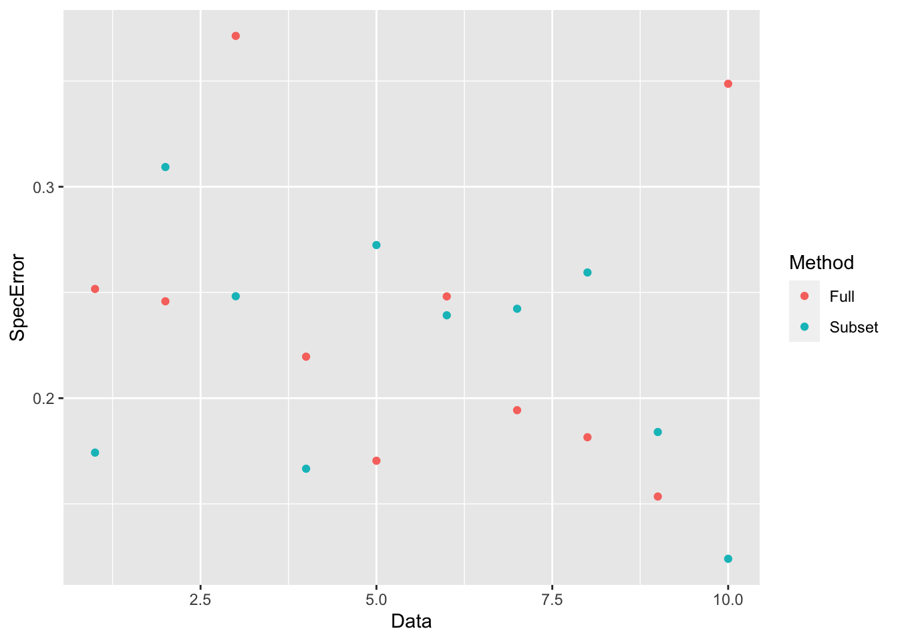
mash log likelihood
temp = matrix(0,nrow = times, ncol = 3)
for(i in 1:times){
temp[i, ] = c(get_loglik(result_wrap[[i]]$m.model$m.model.true), get_loglik(result_wrap[[i]]$m.model$m.model.full),
get_loglik(result_wrap[[i]]$m.model$m.model.subset))
}
colnames(temp) = c('True', 'Full','Subset')
temp = reshape2::melt(temp)
colnames(temp) = c('Data', 'Method', 'loglikelihood')
ggplot(temp, aes(x = Data, y=loglikelihood, group = Method, color = Method)) + geom_point()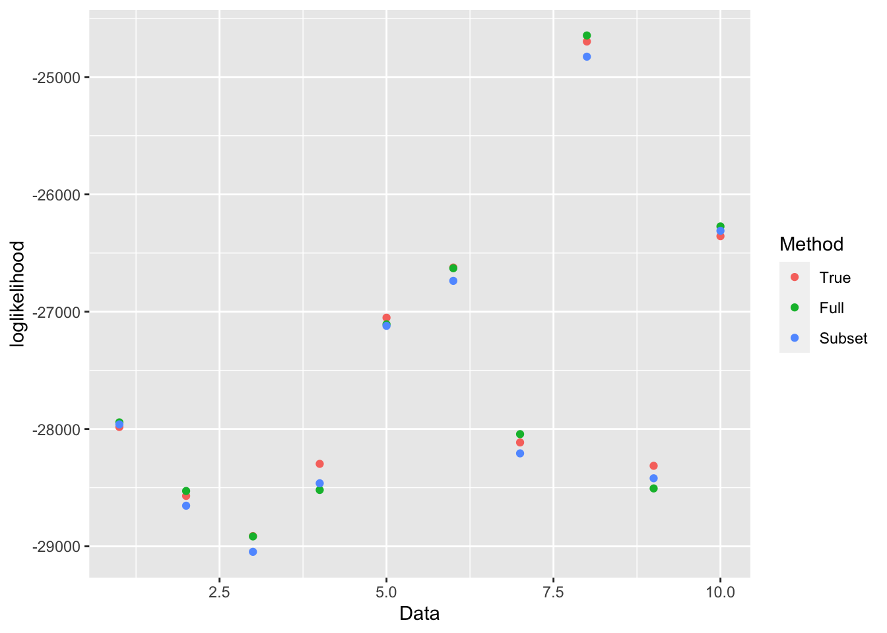
| Version | Author | Date |
|---|---|---|
| 15a5266 | zouyuxin | 2018-11-24 |
ROC
ROC.table = function(data, model){
sign.test = data*model$result$PosteriorMean
thresh.seq = seq(0, 1, by=0.005)[-1]
m.seq = matrix(0,length(thresh.seq), 2)
colnames(m.seq) = c('TPR', 'FPR')
for(t in 1:length(thresh.seq)){
m.seq[t,] = c(sum(sign.test>0 & model$result$lfsr <= thresh.seq[t])/sum(data!=0),
sum(data==0 & model$result$lfsr <=thresh.seq[t])/sum(data==0))
}
return(m.seq)
}
plotROC = function(data.true, result.model, title){
m.full.seq = ROC.table(data.true, result.model$m.model.full)
m.subset.seq = ROC.table(data.true, result.model$m.model.subset)
m.true.seq = ROC.table(data.true, result.model$m.model.true)
plot(m.true.seq[,'FPR'], m.true.seq[,'TPR'],type='l',xlab = 'FPR', ylab='TPR',
main=paste0(title, 'True Pos vs False Pos'), cex=1.5, lwd = 1.5)
lines(m.full.seq[,'FPR'], m.full.seq[,'TPR'], col='red', lwd = 1.5)
lines(m.subset.seq[,'FPR'], m.subset.seq[,'TPR'], col='darkorchid', lwd = 1.5)
legend('bottomright', c('True','Full', 'Subset'),col=c('black','red','darkorchid'),
lty=c(1,1,1), lwd=c(1.5,1.5,1.5))
}par(mfrow=c(1,2))
for(i in 1:times){
plotROC(result[[i]]$data$B, result_wrap[[i]]$m.model, title=paste0('Data', i, ' '))
}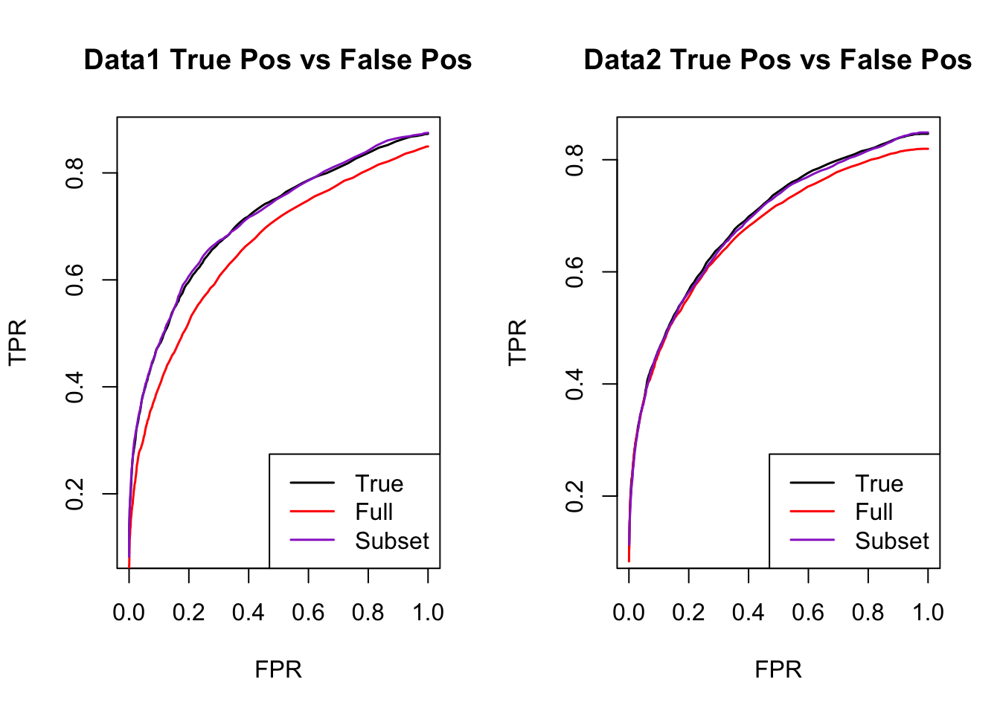
| Version | Author | Date |
|---|---|---|
| 15a5266 | zouyuxin | 2018-11-24 |
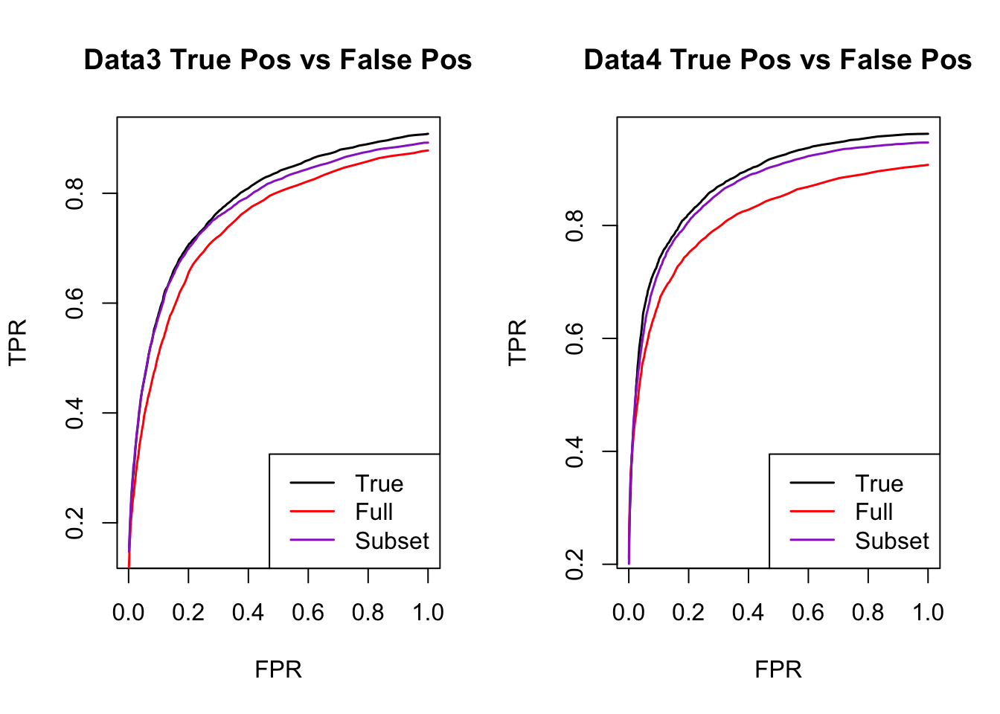
| Version | Author | Date |
|---|---|---|
| 15a5266 | zouyuxin | 2018-11-24 |
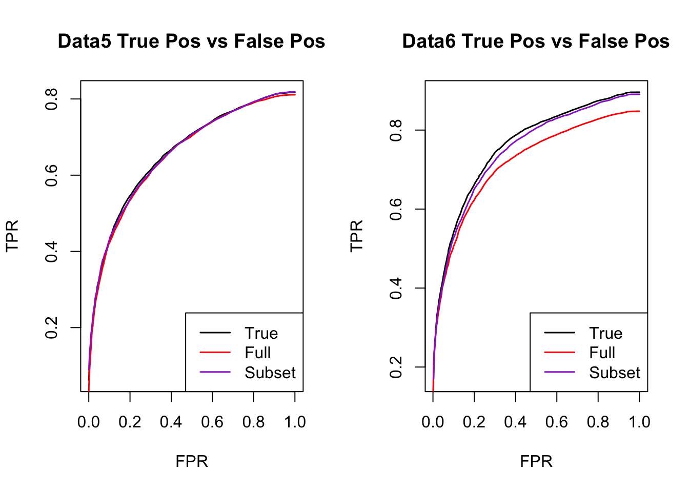
| Version | Author | Date |
|---|---|---|
| 15a5266 | zouyuxin | 2018-11-24 |
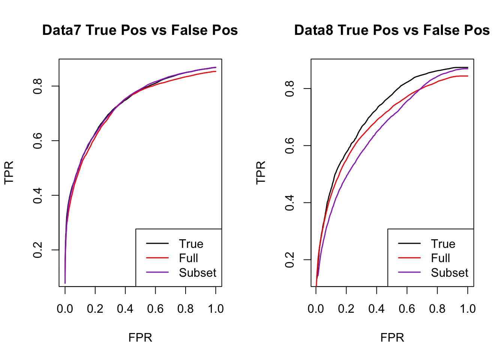
| Version | Author | Date |
|---|---|---|
| 15a5266 | zouyuxin | 2018-11-24 |
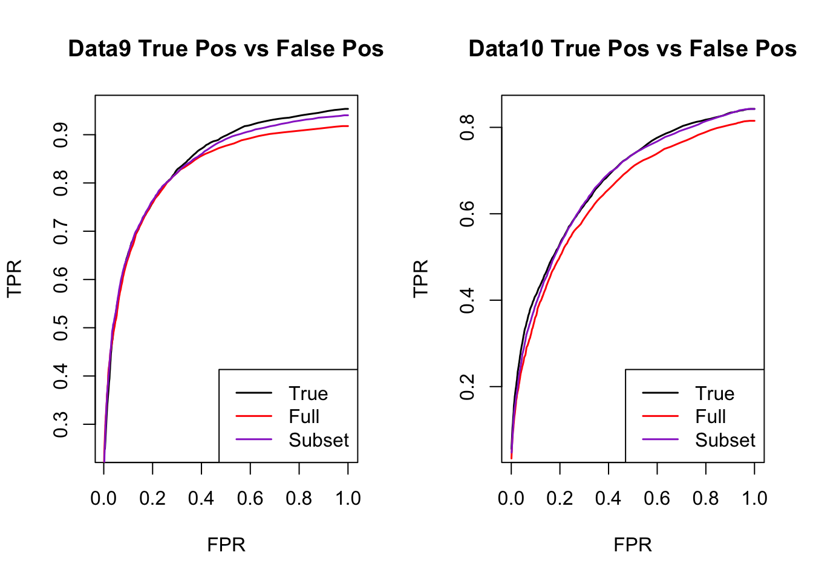
| Version | Author | Date |
|---|---|---|
| 15a5266 | zouyuxin | 2018-11-24 |
RRMSE
RRMSE = function(datatrue, dataobs, model){
model = Filter(length, model)
rrmse = numeric(length(model))
for(k in 1:length(model)){
rrmse[k] = sqrt(mean((datatrue - model[[k]]$result$PosteriorMean)^2)/mean((datatrue - dataobs)^2))
}
rrmse = as.matrix(t(rrmse))
colnames(rrmse) = names(model)
return(rrmse)
}par(mfrow=c(1,2))
for(i in 1:times){
rrmse = rbind(RRMSE(result[[i]]$data$B, result[[i]]$data$Bhat, result_wrap[[i]]$m.model))
barplot(rrmse, ylim=c(0,(1+max(rrmse))/2), las=2, cex.names = 0.7, main='RRMSE')
}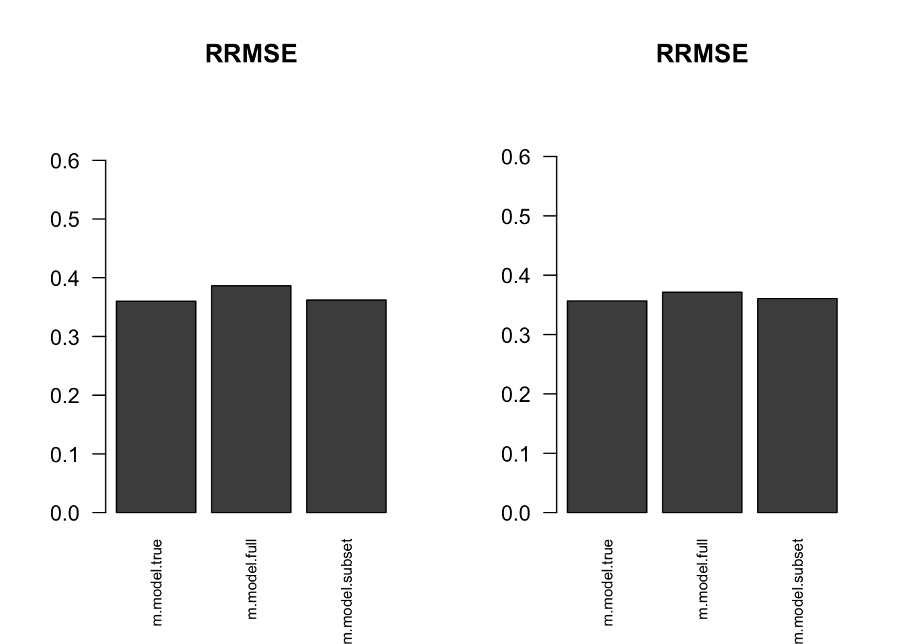
| Version | Author | Date |
|---|---|---|
| 15a5266 | zouyuxin | 2018-11-24 |
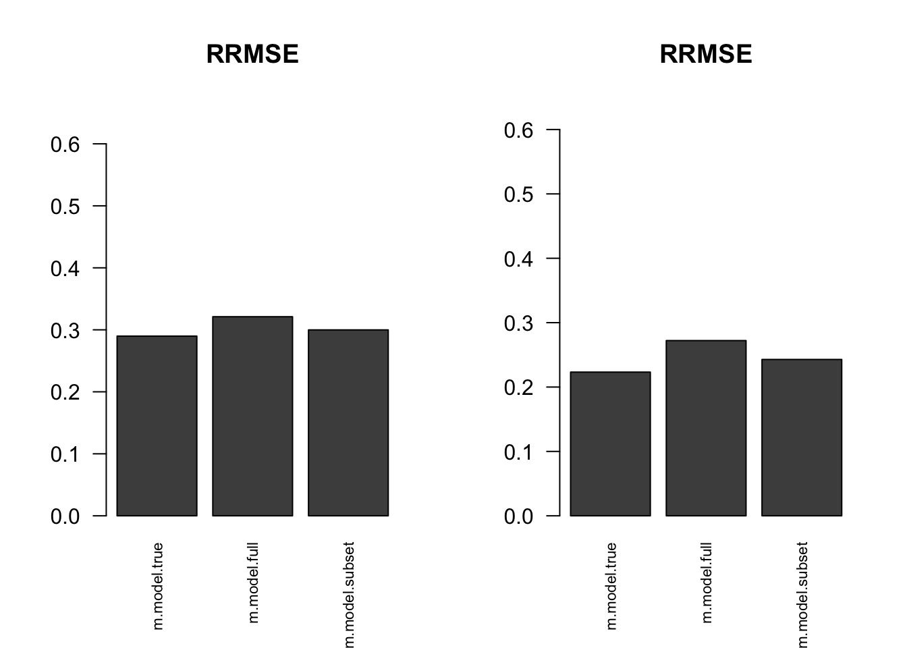
| Version | Author | Date |
|---|---|---|
| 15a5266 | zouyuxin | 2018-11-24 |
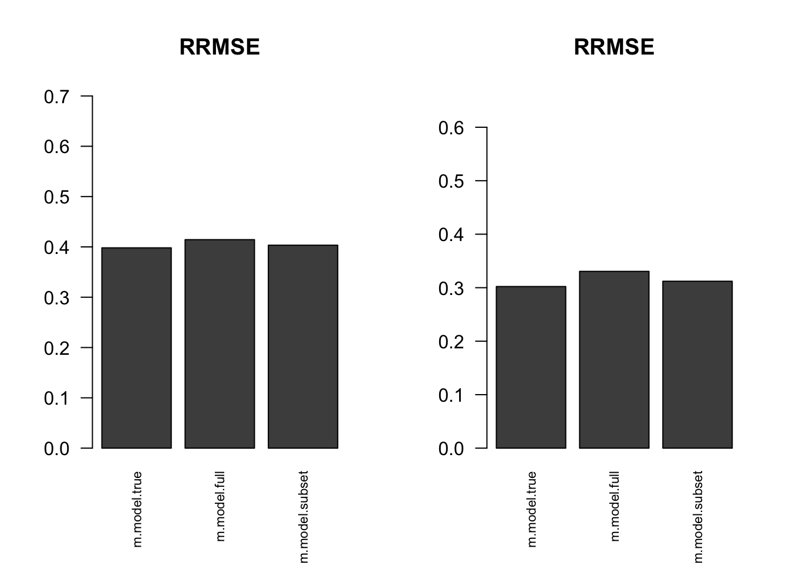
| Version | Author | Date |
|---|---|---|
| 15a5266 | zouyuxin | 2018-11-24 |
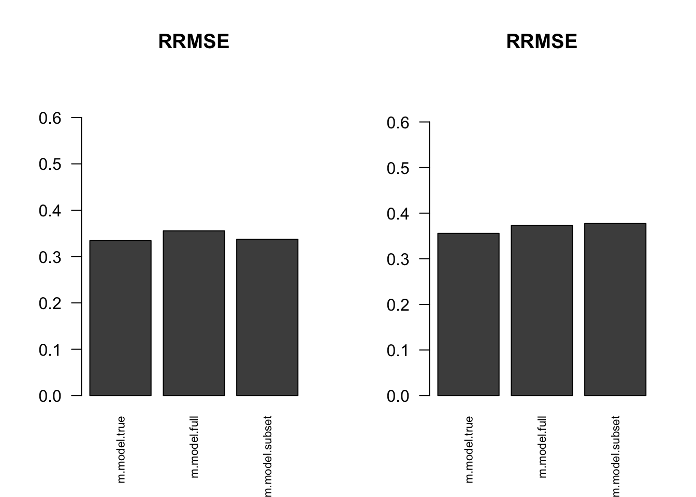
| Version | Author | Date |
|---|---|---|
| 15a5266 | zouyuxin | 2018-11-24 |
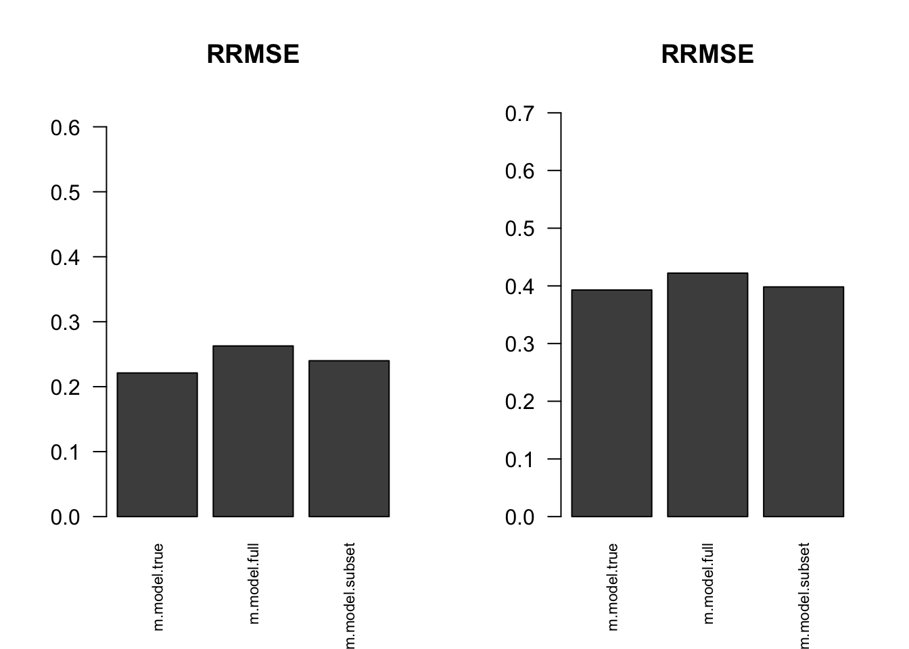
| Version | Author | Date |
|---|---|---|
| 15a5266 | zouyuxin | 2018-11-24 |
sessionInfo()R version 4.0.3 (2020-10-10)
Platform: x86_64-apple-darwin17.0 (64-bit)
Running under: macOS Big Sur 10.16
Matrix products: default
BLAS: /Library/Frameworks/R.framework/Versions/4.0/Resources/lib/libRblas.dylib
LAPACK: /Library/Frameworks/R.framework/Versions/4.0/Resources/lib/libRlapack.dylib
locale:
[1] en_US.UTF-8/en_US.UTF-8/en_US.UTF-8/C/en_US.UTF-8/en_US.UTF-8
attached base packages:
[1] stats graphics grDevices utils datasets methods base
other attached packages:
[1] kableExtra_1.3.1 knitr_1.30 ggplot2_3.3.2 mashr_0.2.40
[5] ashr_2.2-51 workflowr_1.6.2
loaded via a namespace (and not attached):
[1] tidyselect_1.1.0 xfun_0.19 reshape2_1.4.4 purrr_0.3.4
[5] lattice_0.20-41 colorspace_2.0-0 vctrs_0.3.6 generics_0.1.0
[9] viridisLite_0.3.0 htmltools_0.5.0 yaml_2.2.1 rlang_0.4.9
[13] mixsqp_0.3-46 later_1.1.0.1 pillar_1.4.7 glue_1.4.2
[17] withr_2.3.0 lifecycle_0.2.0 plyr_1.8.6 stringr_1.4.0
[21] munsell_0.5.0 gtable_0.3.0 rvest_0.3.6 mvtnorm_1.1-1
[25] evaluate_0.14 labeling_0.4.2 httpuv_1.5.4 invgamma_1.1
[29] irlba_2.3.3 highr_0.8 Rcpp_1.0.5 promises_1.1.1
[33] scales_1.1.1 rmeta_3.0 webshot_0.5.2 truncnorm_1.0-8
[37] abind_1.4-5 farver_2.0.3 fs_1.5.0 digest_0.6.27
[41] stringi_1.5.3 dplyr_1.0.2 grid_4.0.3 rprojroot_2.0.2
[45] tools_4.0.3 magrittr_2.0.1 tibble_3.0.4 crayon_1.3.4
[49] whisker_0.4 pkgconfig_2.0.3 MASS_7.3-53 ellipsis_0.3.1
[53] Matrix_1.2-18 xml2_1.3.2 SQUAREM_2020.5 httr_1.4.2
[57] assertthat_0.2.1 rmarkdown_2.5 rstudioapi_0.13 R6_2.5.0
[61] git2r_0.27.1 compiler_4.0.3